SEESAW: Statistical Estimation Of Allelic Expression Using Salmon And Swish
Euphy Wu, Michael Love
July 2022
Source:vignettes/Bioc2022AllelicExpression.Rmd
Bioc2022AllelicExpression.RmdOverview
Description
In this workshop, we will cover a newly developed suite of tools for
performing analysis of allelic expression in Bioconductor. You will
learn about how we use upstream tools like g2gtools and
Salmon to quantify allelic expression for RNA-seq, and then
how to explore the data in R using the fishpond package.
Altogether we call this suite of tools SEESAW for “Statistical
Estimation Of allelic Expression Using Salmon And sWish”.
Background and other methods
The SEESAW set of methods for quantifying and analyzing allelic data is similar to mmseq, in which uncertainty of assignment of reads to isoforms and alleles is estimated, stored, and using in statistical testing. It is also similar to EMASE, which provides quantification at isoform and allele level; SEESAW also use the same upstream pipeline as EMASE for construction of diploid reference transcripts.
Our approach differs from existing methods for detecting allelic imbalance (AI) in RNA-seq data such as WASP or the Bioconductor package AllelicImbalance, in that we do not focus on pileup of reads on particular SNPs, but instead integrate the isoform- and allele-level information contained in reads aligning to entire transcripts (including both SNP and indel variation). However, these existing methods can be used across patients with different genomes, while the SEESAW methods are designed for analyzing replicate samples with the same diploid genomes (e.g. F1 crosses, or time series of human cell lines).
A recent method for isoform- and allele-level testing is the Bioconductor package PAIRADISE, which quantifies reads that contain both allelic and isoform-level information: those that contain both a heterozygous SNP and a splice juntion. Another relevant recently developed method is ASEP, which allows for gene-level allelic imbalance (AI) detection, accounting for unknown genotype of other nearby regulatory variants. PAIRADISE and ASEP are therefore applicable across populations of genotypically diverse individuals. We link to these publications for background reading below.
Pre-requisites
- Some basic background of RNA biology, e.g. what are genes, what are isoforms/transcripts?
- Some familiarity with RNA-seq data, e.g. what are reads?
- Some familiarity with working with SummarizedExperiment objects will help.
Background reading
- Tools and best practices for data processing in allelic expression analysis
- A vast resource of allelic expression data spanning human tissues
- Haplotype and isoform specific expression estimation using multi-mapping RNA-seq reads (mmseq)
- Hierarchical analysis of RNA-seq reads improves the accuracy of allele-specific expression (EMASE)
- Detecting Allele-Specific Alternative Splicing from Population-Scale RNA-Seq Data (PAIRADISE)
- ASEP: Gene-based detection of allele-specific expression across individuals in a population by RNA sequencing
Time outline
An example for a 45-minute workshop:
| Activity | Time |
|---|---|
| Intro to allelic quant | 15m |
| Exploration of data in R | 15m |
| Testing and visualization | 15m |
Learning goals
- understand why analyzing allelic expression can be useful for learning about cis genetic regulation
- understand differences between approaches to allelic quantification
- understand difference among types of allelic imbalance (AI) tests, e.g. “global”, “differential”, and “dynamic” imbalance
What is allelic expression

Let us assume for this workshop that we are studying a diploid organism, and we focus on the genes with two copies (so genes on the autosome, and e.g. chrX for XX individuals). We do not consider here allelic quantification in cases of complex copy number such as tumor gene expression.
In most RNA-seq pipelines, we are concerned with total expression of genes or transcripts, where we do not distinguish between RNA transcripts from either of the two chromosomes. Suppose the light blue region highlighted above is a gene, and there are two alleles (B and b) which differ by one or more genetic variants. In the case that there are genetic variants falling within the exons of the gene, some RNA-seq reads may contain information that allows us to determine the origin of the RNA transcript, whether from the B chromosome or the b chromosome. Typically, RNA-seq analysis pipelines just are concerned with counting reads aligning to the light blue region, regardless of which chromosome. Some pipelines will attempt to identify which splice isoforms these align to, but do not attempt to distinguish between alleles.
In SEESAW (and mmseq and EMASE) we attempt to distinguish both allele
and isoform from the RNA-seq reads. Again, note that, while there is
always expression from two alleles, only in the middle two cases above,
with one or genetic variants falling in the exons of the highlighted
gene, can we recover allelic information from RNA-seq reads. In this
workshop, we will therefore look at two counts per sample, one count for
the a2 or reference allele, and the other count for the
a1 or alternate allele. In our case, the reference will be
the C57BL/6J (or “B6”) mouse genome, and the alternate allele will be
the CAST/EiJ mouse genome (we will focus on the B6xCAST F1 hybrid
mouse). The mouse pre-osteoblast like cells went through differentiation
induced with an osteoblast differentiation cocktail and RNA was
collected every two days from day 2 to day 18 post differentiation (nine
time points).
Allelic imbalance
The expression of the two alleles may differ for a variety of reasons. Imagine a single cell with two copies of a gene that may be transcribed. You may be familiar with the concept of “transcriptional bursting”:
Mammalian gene expression is inherently stochastic, and results in discrete bursts of RNA molecules that are synthesized from each allele.
-Larsson et al. “Genomic encoding of transcriptional burst kinetics.” Nature 565, 251–254 (2019) https://doi.org/10.1038/s41586-018-0836-1. (Other papers describing the stochastic nature of expression from each allele are the SCALE and scBASE method papers.)
We might expect that these stochastic differences between the two alleles would average out if we look at many cells, as in bulk RNA-seq. But in some cases, we may see systematic differences between the two alleles, which we call allelic imbalance (AI). Some reasons why:
- Interesting biological differences
- Technical artifacts
As in Figure 1 of Castel et al. (2015), the largest differences seen in allelic imbalance are likely mapping bias or genotyping errors (e.g. #2 above). If we map reads to the reference genome, then we will generate a systematic bias where reads from the alternate allele will tend to have lower counts. Likewise, if one of the two genomes has lower quality, even if we map reads to both genomes or transcriptomes (as in SEESAW) we will see a systematic bias towards the higher quality genome. Here we assume both genomes are equally free of errors, but assessing systematic bias is an important part of allelic analysis (e.g. histograms or MA plots of the difference between the mapping rate of the two alleles across all genes).
However, of the type #1 above, there are some possibilities for the source of allelic differences in RNA abundance:
- Epigenetic (e.g. the common example of chrX inactivation)
- Nonsense-mediated decay (NMD)
- Cis-genetic regulation (cGR)
In the first case, one allele is genomically imprinted, which may involve DNA methylation and histone modifications depending on the species. In the second and third case, RNA is often produced from both alleles, but one is degraded at a higher rate (NMD) or produced at a higher rate (cGR).
Our motivation in developing SEESAW was particular on detecting cGR, as we are interested in how non-coding variants cis to a gene may affect transcription. These could affect transcription through alteration of transcription factor binding sites (TFBS) or through changes to splicing. While both TFBS and splicing changes are of interest, in this workshop we will focus on non-coding variation that affects TFBS and therefore modulates transcriptional activity at the promoter.
We therefore will focus on cases where there is allelic imbalance of a transcript, and we can detect this imbalance with RNA-seq (center two cases in the above diagram), and we hypothesize that this imbalance is the result of a heterozygous variant in some regulatory region of the gene. As we only focus here on RNA-seq, we will not have additional data that allows us to locate the source of the regulatory change across the two alleles. For this, it would be useful to have complementary ATAC-seq or ChIP-seq (if a particular TF is of interest).
SEESAW pipeline
At the beginning of the workshop, we will give an overview of the steps that need to take place outside of R, before we import the allelic data into Bioconductor. These are outlined as the first parts of the pipeline in the diagram below. These are also described in detail in the allelic vignette for the fishpond package.
The input to the pipeline of methods is RNA-seq data (FASTQ files), information about the diploid reference genome (e.g. VCF file), and information about the isoforms (e.g. GTF file). The SEESAW suite of methods is currently designed to work for experiments with multiple replicates of samples with the same diploid genome, e.g. F1 crosses, or time series of human cell lines.
The R code below will begin at the center blue square with
importAllelicCounts(), assuming that diploid quantification
with bootstrap replicates for uncertainty has already been
performed.

Links to relevant software:
- g2gtools for constructing the diploid transcriptome
- Salmon, run with bootstrap inferential replicates
Importing allelic counts
The following five un-evaluated code chunks were used to import the allelic quantification from Salmon into R. These are un-evaluated, as the original data is too large to include in this package.
First, we define coldata and txps, which
describe the sample metadata, and the genomic ranges of the transcripts
that were quantified (the haploid reference transcripts). We do not yet
have a convenient way to describe the location of the transcripts in the
diploid genome, so we still rely on a single reference genome here,
although a diploid genome was used for quantifying allelic
expression.
library(AnnotationHub)
library(ensembldb)
# `files` points to `quant.sf` files in original Salmon directories
# other vectors here describe the samples
coldata <- data.frame(cross, day, files, names)
ah <- AnnotationHub()
#query(ah, c("EnsDb","102","Mus musculus"))
edb <- ah[["AH89211"]] # download annotation for mouse from Ensembl
txps <- transcripts(edb)This is how a sample coldata looks like:
| cross | day | files | names | |
|---|---|---|---|---|
| 1 | 129xB6 | 2 | /path/to/quant.sf |
129xB6-d02 |
| 2 | 129xB6 | 4 | /path/to/quant.sf |
129xB6-d04 |
| 3 | CASTxB6 | 2 | /path/to/quant.sf |
CASTxB6-d02 |
| 4 | CASTxB6 | 4 | /path/to/quant.sf |
CASTxB6-d04 |
We can group the transcripts to the gene level with the following
group_id:
The following code chunk imports the allelic data, creating a “wide”
SummarizedExperiment object which will have 2x the number of
columns as the samples listed in coldata. We specify the
strings that distinguish the a1 and a2 allele
in the transcript FASTA file (these are suffices that follow the
transcript name, separated with an underscore,
e.g. ENST123_ref and ENST123_alt. By
convention, the a2 allele describes the reference allele.
In the gse object (gene-level SummarizedExperiment), the
a2 allelic counts will appear as the first columns followed
by the a1 allelic counts. Here we supply txps
as a GRanges object with a metadata column
group_id that describes how we collapse transcript-level
counts.
library(fishpond)
gse <- importAllelicCounts(
coldata, a1="alt", a2="ref",
format="wide", tx2gene=txps,
)Finally, we performed minimal filtering on the features:
# filtering out lowly expressed features:
keep <- rowSums(assay(gse) >= 10) >= 6
gse <- gse[keep,]Alternatively, we can group transcript-level counts to the
transcription start site (TSS) level using the following code chunk to
define txps. makeTx2Tss() is a convenience
function in fishpond. The maxgap=50 argument means
we will group together transcripts that have TSS that fall within 50bp
of each other.
txps <- makeTx2Tss(edb, maxgap=50) %>%
select(tx_id, gene_id, group_id, tss)Q: why would we want to collapse to TSS level?
Mouse osteoblast differentiation
We have two pre-packaged datasets as part of this workshop package, one where allelic counts from the osteoblast RNA-seq experiment are summarized to the gene level, and another where they are summarized to the TSS level.
The datasets are described in the man pages (see References tab). Briefly, mouse osteoblast cells were differentiated over a time course from day 2 to day 18. The data has been subset to just the genes on chr1. A reference for the experiment is:
Kemp JP, Medina-Gomez C, Estrada K, St Pourcain B et al. Phenotypic dissection of bone mineral density reveals skeletal site specificity and facilitates the identification of novel loci in the genetic regulation of bone mass attainment. PLoS Genet 2014 Jun;10(6):e1004423. PMID: 24945404 https://www.ncbi.nlm.nih.gov/pmc/articles/PMC4063697/
The RNA-seq reads were processed via the quantification part of SEESAW as described above. Only data from chromosome 1 is included in the pre-packaged datasets for simplicity of the workshop.
Q: why would we be interested in allelic expression during osteoblast differentiation?
Explore allelic counts
We first load the gene-level dataset created with
importAllelicCounts():
library(SummarizedExperiment)
library(Bioc2022AllelicExpression)
data(osteoblast_gene_chr1)
osteoblast_gene_chr1
#> class: RangedSummarizedExperiment
#> dim: 1211 36
#> metadata(3): tximetaInfo countsFromAbundance alleles
#> assays(33): counts abundance ... infRep29 infRep30
#> rownames(1211): ENSMUSG00000001138 ENSMUSG00000001143 ...
#> ENSMUSG00000118219 ENSMUSG00000118607
#> rowData names(9): gene_id gene_name ... symbol entrezid
#> colnames(36): 129xB6-d02-a2 129xB6-d04-a2 ... CASTxB6-d16-a1
#> CASTxB6-d18-a1
#> colData names(3): allele cross day
g <- osteoblast_gene_chr1The sample metadata:
colData(g)
#> DataFrame with 36 rows and 3 columns
#> allele cross day
#> <factor> <factor> <numeric>
#> 129xB6-d02-a2 a2 129xB6 2
#> 129xB6-d04-a2 a2 129xB6 4
#> 129xB6-d06-a2 a2 129xB6 6
#> 129xB6-d08-a2 a2 129xB6 8
#> 129xB6-d10-a2 a2 129xB6 10
#> ... ... ... ...
#> CASTxB6-d10-a1 a1 CASTxB6 10
#> CASTxB6-d12-a1 a1 CASTxB6 12
#> CASTxB6-d14-a1 a1 CASTxB6 14
#> CASTxB6-d16-a1 a1 CASTxB6 16
#> CASTxB6-d18-a1 a1 CASTxB6 18For each sample and each allele, we have counts and also bootstrap
replicates. The bootstrap replicates are from Salmon, by specifying
--numBootstraps 30 during quantification.
Q: Why do we need bootstrap replicates for allelic analysis (or isoform-level analysis)?
We can use fishpond functions to do some basic exploration of the allelic counts.
The counts assay provides the read counts for features x samples, as Salmon is used for quantification these are estimated counts that are non-negative but fractional, not integer. The abundance assay gives estimates in Transcripts Per Million (TPM). The length assay gives the average effective transcript length for a given transcript or a given gene. Finally the infRep’s are the bootstrap samples for the counts.
library(fishpond)
assayNames(g)
#> [1] "counts" "abundance" "length" "infRep1" "infRep2" "infRep3"
#> [7] "infRep4" "infRep5" "infRep6" "infRep7" "infRep8" "infRep9"
#> [13] "infRep10" "infRep11" "infRep12" "infRep13" "infRep14" "infRep15"
#> [19] "infRep16" "infRep17" "infRep18" "infRep19" "infRep20" "infRep21"
#> [25] "infRep22" "infRep23" "infRep24" "infRep25" "infRep26" "infRep27"
#> [31] "infRep28" "infRep29" "infRep30"getTrace obtains a trace of the inferential replicates
of counts for one feature and one sample (multiple features/samples can
also be returned). Plotting the trace in the histogram helps us to
visualize the distribution of the estimated counts for the day 2 sample
of the CASTxB6 cross, reference allele (a2). We can see for
this particular sample, the counts have roughly the same mean and
variance, indicating that there is not much uncertainty (minimal
bootstrap variance will roughly follow what is expected for a Poisson
random variable).
dat <- getTrace(g, idx=1, samp_idx="CASTxB6-d02-a2")
hist(dat$count, border="white", col="grey50", xlab="estimated count, a2")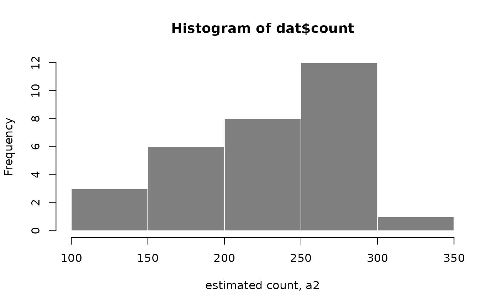
We can also visualize the bootstrap distributions for all samples for
a given gene using plotInfReps(). Here we have a boxplot of
inferential replicates for gene ENSMUSG00000004110, grouped
by allele.
plotInfReps(g, idx=1, x="allele", legend=TRUE)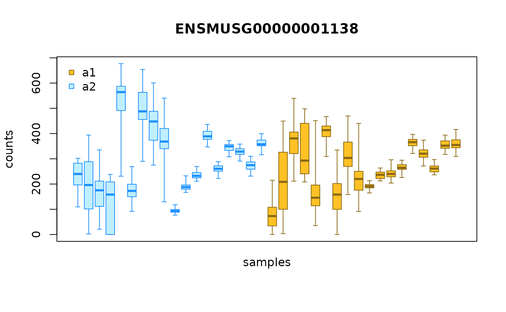
We can also group the allelic counts ordered by sample, e.g.:
gcast <- g[,g$cross == "CASTxB6"]
plotInfReps(gcast, idx=1, x="allele", cov="day", legend=TRUE)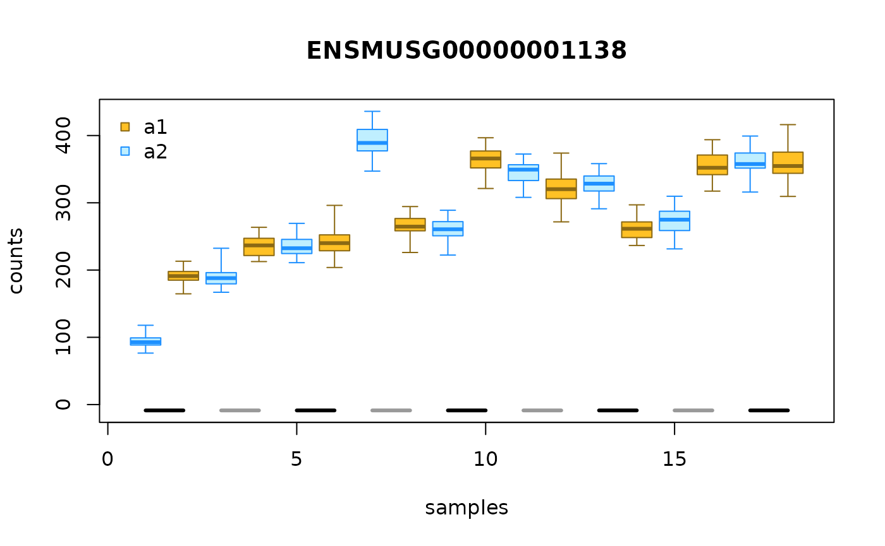
In the above plot, the samples are ordered by sample, as if
day x allele were a categorical variable. We
can also plot day on its original continuous scale. To do
so, we use points and lines to represent the bootstrap distribution
instead of boxplots. To draw the line, we need to first compute the
bootstrap variance, which can be computed with the
computeInfRV() function (InfRV = “inferential relative
variance”, a useful diagnostic for comparing uncertainty across
features):
gcast <- computeInfRV(gcast)
plotInfReps(gcast, idx=1, x="day", cov="allele",
shiftX=.2, legend=TRUE)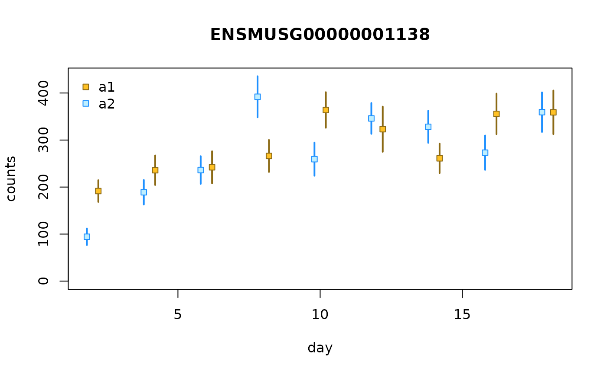
Filter non-informative features
Some features have no sequence difference between the two alleles.
One easy way to detect these is to look at a single bootstrap replicate,
e.g. the first one infRep1. If this bootstrap sample gives
the same count to each allele, across all samples, this implies either
that the sequence was identical across alleles, or there were no reads
covering the part of the transcript sequence that contains a difference
across alleles. We remove these from the dataset, as they are
non-informative for allelic imbalance analysis.
n <- ncol(gcast)/2
rep1a1 <- assay(gcast, "infRep1")[, gcast$allele == "a1" ]
rep1a2 <- assay(gcast, "infRep1")[, gcast$allele == "a2" ]
someInfo <- rowSums(abs(rep1a1 - rep1a2) < 1) < n
table(someInfo)
#> someInfo
#> FALSE TRUE
#> 50 1161
gcast <- gcast[ someInfo, ]We can examine a rough estimate of the log fold change across samples
to see if there is a systematic bias. Here, the samples with higher
sequencing depth will have greater influence on the log fold change.
This is better estimated by the swish() function by
specifying the pairs of counts per sample. For large count genes, the
log fold change appears centered on LFC=0.
a1 <- rowSums(assay(gcast, "counts")[, gcast$allele == "a1"])
a2 <- rowSums(assay(gcast, "counts")[, gcast$allele == "a2"])
rough_lfc <- log2(a1+1) - log2(a2+1)
rough_total <- a1 + a2 + 2
rough_ratio <- (a1 + 1) / rough_total
plot(log10(rough_total), rough_lfc); abline(h=0,col="red")
hist(rough_ratio[rough_total > 1e3], breaks=100,
col="grey50", border="white")
abline(v=0.5, col="red")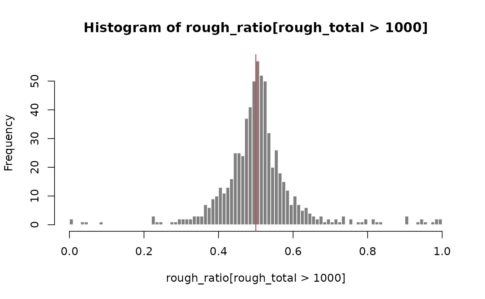
Q: what might we see if one of the parental genomes/genotypes was poorly annotated?
Testing for allelic imbalance
Here we switch to using TSS-level allelic counts, which may give different AI signal than gene-level allelic counts. Both can be analyzed using SEESAW, but we have some additional plots that are particularly useful for isoform- or TSS-level allelic analysis.
Q: how could TSS-level AI signal differ from gene-level?
Here, we have grouped transcripts together by TSS using +/- 50bp tolerance (so forming fewer groups by allowing +/- 50bp between TSS to join them into a group).
data(osteoblast_tss_chr1)
tss <- osteoblast_tss_chr1
tcast <- tss[,tss$cross == "CASTxB6"]We first filter out non-informative features as shown in the previous step:
n <- ncol(tcast)/2
rep1a1 <- assay(tcast, "infRep1")[, tcast$allele == "a1" ]
rep1a2 <- assay(tcast, "infRep1")[, tcast$allele == "a2" ]
someInfo <- rowSums(abs(rep1a1 - rep1a2) < 1) < n
table(someInfo)
#> someInfo
#> FALSE TRUE
#> 166 2104
tcast <- tcast[ someInfo, ]Running swish generally involves scaling the inferential
replicates, filtering out rows with insufficient counts, and calculating
the statistics (log fold changes, test statistics, p-values and
q-values). Here, we skip scaling the counts (to account for sequencing
depth) since we are comparing the counts of the two alleles within
samples. By default, labelKeep will label features with a
minimal count of 10 in at least 3 samples.
Here we are performing two types of allelic imbalance testing.
Global AI tests for consistent allelic imbalance across all
samples. Dynamic AI tests for non-zero correlation between the
log allelic fold change and a continuous variable (in this case, the
day).
tcast <- labelKeep(tcast)
tcast <- tcast[mcols(tcast)$keep,]
# for plots later
tcast <- computeInfRV(tcast)The tests involve permutation, and so it takes about 20 seconds in this case.
The dynamic test here takes about 40 seconds.
Q: why do we specify day twice in the dynamic
analysis?
The results are stored in mcols() in each case. We can
examine how many TSS groups are detected as having global or dynamic AI
in a 5% FDR set:
table(mcols(global)$qvalue < 0.05)
#>
#> FALSE TRUE
#> 1548 485
table(mcols(dy)$qvalue < 0.05)
#>
#> FALSE TRUE
#> 2016 17Q: why are there fewer dynamic positive results?
Plotting test results
We can visualize the relationship between allelic log fold change
versus mean expression through MA plots. Blue points are TSS groups in
the 5% FDR set. One can specify the threshold by using
alpha = ... option.
plotMASwish(global, alpha=.05, main="Global MA Plot")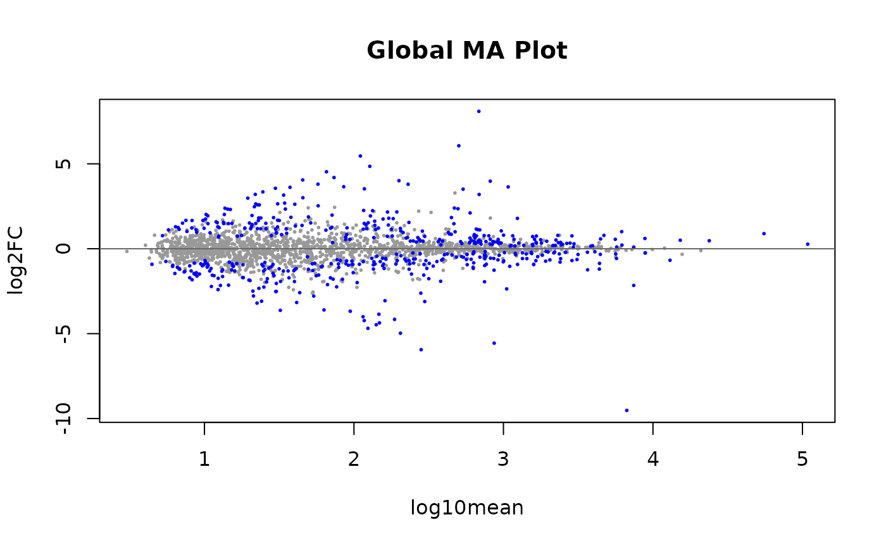
The average LFC over all samples is plotted also for the dynamic test, although the correlation is the test statistic used for computing p-values and q-values. Hence the most extreme LFC are not in the 5% FDR set.
plotMASwish(dy, alpha=.05, main="Dynamic MA Plot")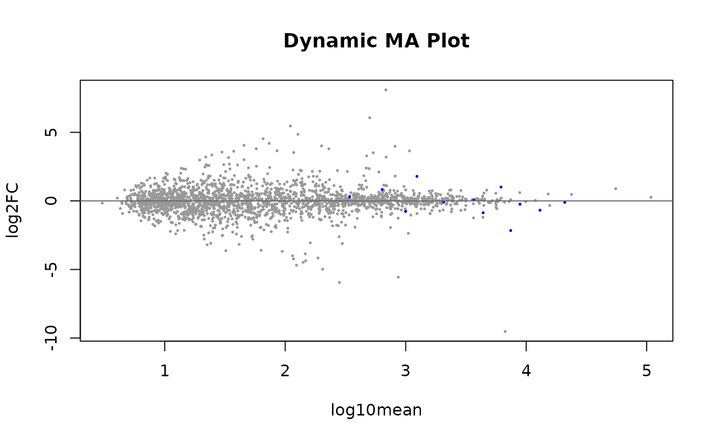
Global AI visualization
We now want to visualize the TSS group analysis in a genomic context. To do so, first we must download the mouse Ensembl annotations. We do so using AnnotationHub:
ah <- AnnotationHub()
#> snapshotDate(): 2022-07-22
edb <- ah[["AH89211"]]
#> loading from cacheThe plotAllelicGene() function in fishpond
can be used to visualize Swish test results (\(-log_{10}(q-value)\) and log2FC), allelic
proportions and isoform proportions (calculated from TPM) within the
context of the gene model. One can also indicate which gene to plot
using gene symbol, e.g. symbol="Soat1". Either
TxDb or EnsDb can be use to include the gene model at
the top of the plot.
plotAllelicGene(global, gene="ENSMUSG00000026600",
db=edb, labels=list(a2="B6",a1="CAST"))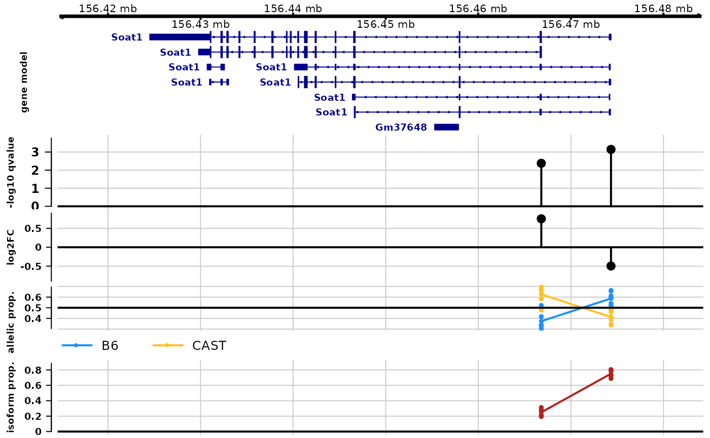
Q: which isoform has higher abundance?
We can verify the plotAllelicGene() figure with
plotInfReps(). We can see B6 has a higher count than CAST
in majority of the samples. One can customize the label of alleles in
the function with the following code, switching from a2, a1
to B6, CAST.
tcast$allele_new <- tcast$allele
levels(tcast$allele_new) <- c("B6", "CAST")
idx <- match("ENSMUSG00000026600", mcols(tcast)$gene_id)
plotInfReps(tcast, idx=idx, x="allele_new", cov="day",
legend=TRUE, legendPos="topright")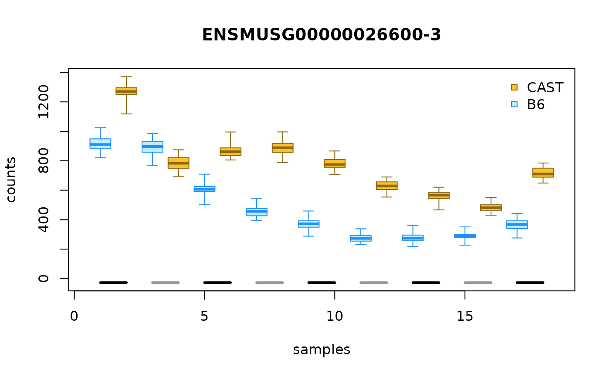
We can also use a heatmap to visualize the difference in expression
across alleles for the TSS groups, using
plotAllelicHeatmap(), which itself calls
pheatmap(). Darker green in the annotation bar represents a
more significant qvalue in differential testing (for allelic
imbalance). A color toward red indicates more of the a1
allele (CAST) while a color toward blue indicates more of
a2 (B6).
idx <- mcols(global)$gene_id == "ENSMUSG00000026600"
dat <- data.frame(minusLogQ=-log10(mcols(global)$qvalue[idx]),
row.names=rownames(global)[idx])
colnames(global) <- c(paste0("Day ",seq(2,18, by= 2), "-a2"),
paste0("Day ",seq(2,18, by= 2), "-a1"))
plotAllelicHeatmap(global, idx=idx, annotation_row=dat)
#> using posterior mean for calculating ratio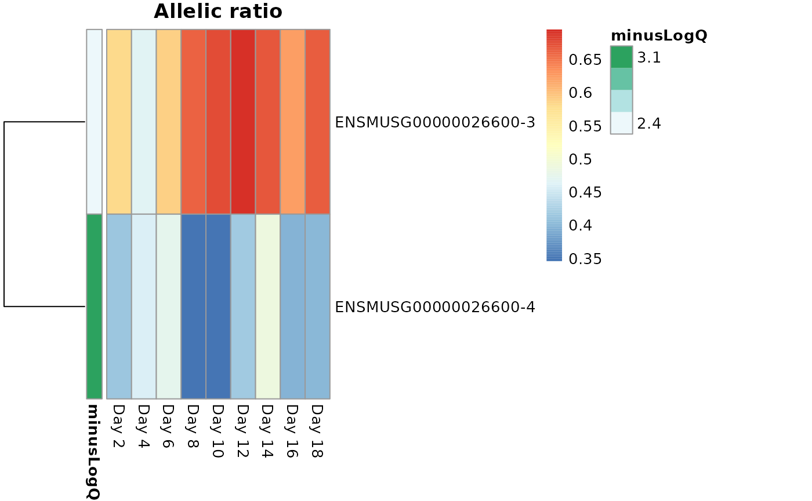
Dynamic AI visualization
plotInfReps() is a useful function for visualizing how
allelic counts changes over a continuous covariate, such as
day. Using lines can help us better visualize
the trend.
plotCurves <- function(dy, idx) {
cols <- c("dodgerblue","goldenrod4")
plotInfReps(dy, idx=idx, x="day", cov="allele", shiftX=0.01)
lines(dy$day[1:9], assay(dy, "mean")[idx,1:9], col=cols[1])
lines(dy$day[10:18], assay(dy, "mean")[idx,10:18], col=cols[2])
legend("topleft", legend=c("B6", "CAST"), pch=15, col=cols, inset=.05)
}
idx <- "ENSMUSG00000026185-1"
plotCurves(dy, idx)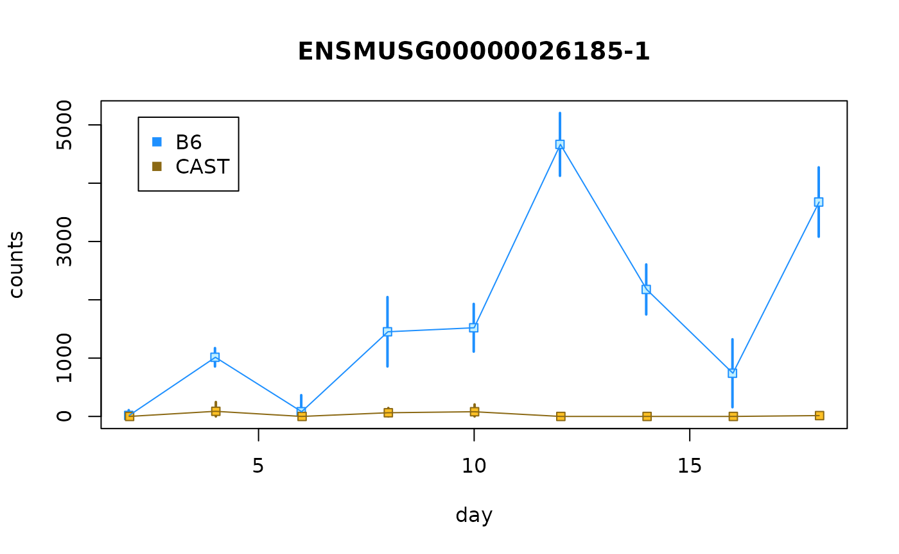
idx <- "ENSMUSG00000026185-2"
plotCurves(dy, idx)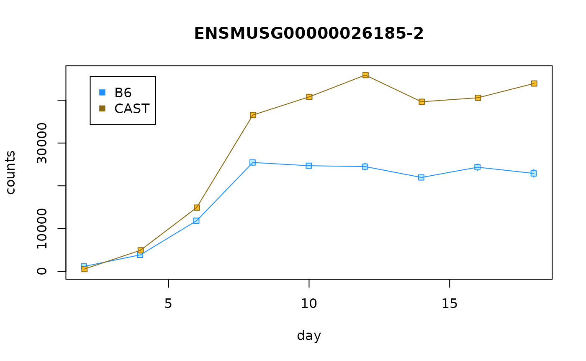
Q: What do you notice with the two infRV plots? HINT: Is the allelic imbalance in the same direction?
plotAllelicGene() can also be used to visualize
time-series allelic imbalance data. We first need to group the
timepoints (or else the plot would have no room as there are 9 distinct
time points). In this example, we are grouping Day 2-6, Day 8-12, and
Day 14-18 together. How best to group the timepoints depends on either
the biological system of a strategy to demonstrate maximal differences
in the ratio per group (e.g. by looking at plotInfReps()
plot).
The plot shows allelic proportions with grouped timepoints, as well as isoform proportion. We can see an increasing in B6 expression over time for the first transcript group and an increasing in CAST expression with time for the second transcript group.
# this makes integer bins
dy$time_bins <- cut(dy$day,breaks=c(2,6,12,18),
include.lowest=TRUE, labels=FALSE)
# come up with useful time group labels
time_labels <- c("Day02-06","Day08-12","Day14-18")
# use new time group labels
dy$time_bins <- time_labels[ dy$time_bins ]
gene <- "ENSMUSG00000026185"
plotAllelicGene(dy, gene=gene, db=edb, cov="time_bins",
qvalue=FALSE, log2FC=FALSE,
tpmFilter=.1, isoPropFilter=.01,
labels=list(a2="B6",a1="CAST"))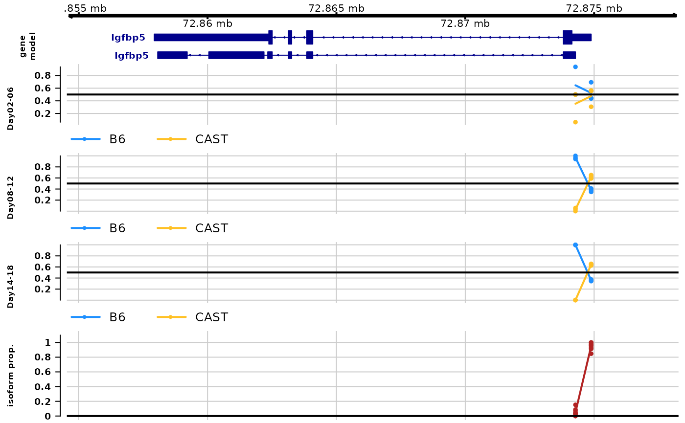
The same gene, but looking at infReps:
idx <- which(mcols(dy)$gene_id == gene)
par(mfrow=c(2,1), mar=c(3,4.5,1.5,1))
plotCurves(dy, idx[1])
plotCurves(dy, idx[2])
Q: What type of plot might help to visualize time-series allelic data across multiple transcripts and multiple samples?
We can add a time bar on the top of a heatmap to indicate time by
defining col_dat.
idx <- which(mcols(dy)$gene_id == "ENSMUSG00000026185")
dat <- data.frame(minusLogQ=-log10(mcols(dy)$pvalue[idx]),
row.names=rownames(dy)[idx])
colnames(dy) <- c(paste0("Day ",seq(2,18, by= 2), "-a2"),
paste0("Day ",seq(2,18, by= 2), "-a1"))
row_dat <- data.frame(minusLogQ=-log10(mcols(dy)$qvalue[idx]),
row.names=rownames(dy)[idx])
col_dat <- data.frame(time=dy$day[1:9],
row.names=paste0("Day ",seq(2,18, by= 2)))
plotAllelicHeatmap(dy, idx=idx,
annotation_row=row_dat,
annotation_col=col_dat,
cluster_rows=FALSE)
#> using posterior mean for calculating ratio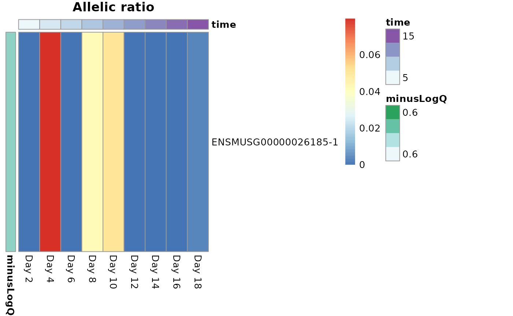
Going further
This was a brief exploration of visualization and statistical inference of allelic expression data using Bioconductor packages. Some points for further analysis:
- Lots of plots - In our development of SEESAW, we found that allelic analysis within gene benefits greatly from examining many types of plots. There are many layers of information (isoform, allele, time points, etc.) along with measures of significance or uncertainty, and no single plot captures all the information. We recommend looking at many plots for genes of interest, to determine if the correct signals are being captured / if any signal is present by not captured by the design.
-
Looking at aligned reads - We additionally recommend to
make use of IGV or other genome browsers to examine distributions of
reads along transcripts. This requires an additional mapping step
(mapping reads with either a SNP-aware aligner, or using WASP to remove reads
susceptible to allelic mapping bias. In the mouse osteoblast dataset, we
used WASP to generate the
mergedBAM files (Step 6 of themappingpipeline) containing mappability-filtered aligned reads, and then often would visualize these aligned reads using IGV, for genes of interest. This alignment pipeline is then separate from the Salmon quantification pipeline described above, and more for quality control and examination of reads, haplotypes, and gene models. - Causes of allelic imbalance - here we focused on detecting imbalance in the abundance of isoforms/genes across alleles. Systematic differences in the expression level of the two alleles could have a variety of upstream causes, as described at the beginning of this document. One type of upstream cause is genetic variation residing in cis-regulatory elements (CRE). One additional dataset that can be produced and examined alongside allelic RNA-seq is allelic ATAC-seq or ChIP-seq. Observing commensurate changes in the accessibility or binding at CRE local to the promoter of the gene (and perhaps linked by chromatin interaction data) would be further evidence for a regulatory relationship between CRE and transcription.
More details can be found at the allelic vignette of the fishpond package:
https://mikelove.github.io/fishpond/articles/allelic.html
We expect to also post a preprint describing the methods a few weeks following BioC2022 conference.
Session info
sessionInfo()
#> R version 4.2.0 (2022-04-22)
#> Platform: x86_64-pc-linux-gnu (64-bit)
#> Running under: Ubuntu 20.04.4 LTS
#>
#> Matrix products: default
#> BLAS: /usr/lib/x86_64-linux-gnu/openblas-pthread/libblas.so.3
#> LAPACK: /usr/lib/x86_64-linux-gnu/openblas-pthread/liblapack.so.3
#>
#> locale:
#> [1] LC_CTYPE=en_US.UTF-8 LC_NUMERIC=C
#> [3] LC_TIME=en_US.UTF-8 LC_COLLATE=en_US.UTF-8
#> [5] LC_MONETARY=en_US.UTF-8 LC_MESSAGES=en_US.UTF-8
#> [7] LC_PAPER=en_US.UTF-8 LC_NAME=C
#> [9] LC_ADDRESS=C LC_TELEPHONE=C
#> [11] LC_MEASUREMENT=en_US.UTF-8 LC_IDENTIFICATION=C
#>
#> attached base packages:
#> [1] stats4 stats graphics grDevices utils datasets methods
#> [8] base
#>
#> other attached packages:
#> [1] ensembldb_2.21.2 AnnotationFilter_1.21.0
#> [3] GenomicFeatures_1.49.5 AnnotationDbi_1.59.1
#> [5] AnnotationHub_3.5.0 BiocFileCache_2.5.0
#> [7] dbplyr_2.2.1 fishpond_2.3.6
#> [9] Bioc2022AllelicExpression_0.0.2 SummarizedExperiment_1.27.1
#> [11] Biobase_2.57.1 GenomicRanges_1.49.0
#> [13] GenomeInfoDb_1.33.3 IRanges_2.31.0
#> [15] S4Vectors_0.35.1 BiocGenerics_0.43.0
#> [17] MatrixGenerics_1.9.1 matrixStats_0.62.0
#>
#> loaded via a namespace (and not attached):
#> [1] backports_1.4.1 Hmisc_4.7-0
#> [3] systemfonts_1.0.4 plyr_1.8.7
#> [5] lazyeval_0.2.2 splines_4.2.0
#> [7] BiocParallel_1.31.10 ggplot2_3.3.6
#> [9] digest_0.6.29 htmltools_0.5.3
#> [11] fansi_1.0.3 checkmate_2.1.0
#> [13] magrittr_2.0.3 memoise_2.0.1
#> [15] svMisc_1.2.3 BSgenome_1.65.2
#> [17] cluster_2.1.3 Biostrings_2.65.1
#> [19] pkgdown_2.0.6 prettyunits_1.1.1
#> [21] jpeg_0.1-9 colorspace_2.0-3
#> [23] blob_1.2.3 rappdirs_0.3.3
#> [25] textshaping_0.3.6 xfun_0.31
#> [27] dplyr_1.0.9 crayon_1.5.1
#> [29] RCurl_1.98-1.7 jsonlite_1.8.0
#> [31] VariantAnnotation_1.43.2 survival_3.3-1
#> [33] glue_1.6.2 gtable_0.3.0
#> [35] zlibbioc_1.43.0 XVector_0.37.0
#> [37] DelayedArray_0.23.0 SingleCellExperiment_1.19.0
#> [39] abind_1.4-5 scales_1.2.0
#> [41] pheatmap_1.0.12 DBI_1.1.3
#> [43] Rcpp_1.0.9 htmlTable_2.4.1
#> [45] xtable_1.8-4 progress_1.2.2
#> [47] foreign_0.8-82 bit_4.0.4
#> [49] Formula_1.2-4 htmlwidgets_1.5.4
#> [51] httr_1.4.3 RColorBrewer_1.1-3
#> [53] ellipsis_0.3.2 farver_2.1.1
#> [55] pkgconfig_2.0.3 XML_3.99-0.10
#> [57] nnet_7.3-17 Gviz_1.41.1
#> [59] sass_0.4.2 deldir_1.0-6
#> [61] utf8_1.2.2 tidyselect_1.1.2
#> [63] rlang_1.0.4 reshape2_1.4.4
#> [65] later_1.3.0 munsell_0.5.0
#> [67] BiocVersion_3.16.0 tools_4.2.0
#> [69] cachem_1.0.6 cli_3.3.0
#> [71] generics_0.1.3 RSQLite_2.2.15
#> [73] evaluate_0.15 stringr_1.4.0
#> [75] fastmap_1.1.0 yaml_2.3.5
#> [77] ragg_1.2.2 knitr_1.39
#> [79] bit64_4.0.5 fs_1.5.2
#> [81] purrr_0.3.4 KEGGREST_1.37.3
#> [83] mime_0.12 xml2_1.3.3
#> [85] biomaRt_2.53.2 rstudioapi_0.13
#> [87] compiler_4.2.0 filelock_1.0.2
#> [89] curl_4.3.2 png_0.1-7
#> [91] interactiveDisplayBase_1.35.0 tibble_3.1.8
#> [93] bslib_0.4.0 stringi_1.7.8
#> [95] highr_0.9 desc_1.4.1
#> [97] lattice_0.20-45 ProtGenerics_1.29.0
#> [99] Matrix_1.4-1 vctrs_0.4.1
#> [101] pillar_1.8.0 lifecycle_1.0.1
#> [103] BiocManager_1.30.18 jquerylib_0.1.4
#> [105] data.table_1.14.2 bitops_1.0-7
#> [107] httpuv_1.6.5 rtracklayer_1.57.0
#> [109] qvalue_2.29.0 R6_2.5.1
#> [111] BiocIO_1.7.1 latticeExtra_0.6-30
#> [113] promises_1.2.0.1 gridExtra_2.3
#> [115] codetools_0.2-18 dichromat_2.0-0.1
#> [117] gtools_3.9.3 assertthat_0.2.1
#> [119] rprojroot_2.0.3 rjson_0.2.21
#> [121] GenomicAlignments_1.33.1 Rsamtools_2.13.3
#> [123] GenomeInfoDbData_1.2.8 parallel_4.2.0
#> [125] hms_1.1.1 rpart_4.1.16
#> [127] grid_4.2.0 rmarkdown_2.14
#> [129] biovizBase_1.45.0 shiny_1.7.2
#> [131] base64enc_0.1-3 interp_1.1-3
#> [133] restfulr_0.0.15